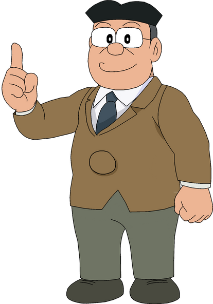

Personajes Principales de Doraemon
Doraemon

El gato cósmico del futuro con un bolsillo mágico lleno de inventos.
Nobita
Un niño perezoso pero de buen corazón, siempre metido en líos.
Personajes Secundarios
Shizuka

La amiga inteligente y amable de Nobita, apasionada por el violín.
Suneo
Presumido y algo manipulador, siempre quiere lucirse frente a los demás.
Gigante

El matón del grupo con una voz horrible pero un lado oculto amable.
Personajes Secundarios de Doraemon
| Nombre | Descripción | Primera Aparición | Imagen |
|---|---|---|---|
| Dorami | Hermana menor de Doraemon, más inteligente y responsable. | 1973 |

|
| Jaiko Goda | Hermana de Gigante, aspira a ser mangaka. | 1973 |

|
| Hidetoshi Dekisugi | Compañero de clase de Nobita, inteligente y amable. | 1973 |

|
| Sewashi Nobi | Tataranieto de Nobita, envía a Doraemon al pasado para ayudarlo. | 1973 |

|
| Sensei | Profesor de Nobita, estricto pero preocupado por sus alumnos. | 1973 |  |
| Michiko Minamoto | Madre de Shizuka, amable y preocupada por la educación de su hija. | 1973 | |
| Señora Goda | Madre de Gigante, fuerte y respetada, mantiene a raya a su hijo. | 1973 |

|
| Señora Honekawa | Madre de Suneo, elegante y orgullosa de su estatus social. | 1973 |

|
| Pak Kaminari | Vecino anciano que a menudo se enfada cuando los niños juegan cerca de su casa. | 1973 |

|
| Mii-chan | Gata blanca que es el interés amoroso de Doraemon. | 1973 |

|